Figure 6.1.6
Torque 2D - Fish Game Tutorial - Part 6
6. Adding More Gameplay
Ok now that we have our basic game play implemented, we can add a few more aspects to it. Right now, the goal of the fish is to gather the food. So what we can do, is add in another fish that swims by at random locations, and picks up the food instead of our fish. This means we will create a new class for this new type of fish, though we don't have to worry about any input aspects. These new fish will simply swim from one side of the level to the other. Once off screen we can move them to a random Y location and then make them swim back.
Our first step is to create the scripts
that will control the movement of the fish. So browse to the MyFishGame/gameScripts
folder and create a new script file called "fish.cs." Also remember that since
we have added a new script file, we need to make sure it gets included when T2D
runs. Open up your game.cs script file so we can add a new exec()
command. We need to add another exec statement to our startGame() function.
function startGame(%level)
{
exec("./player.cs");
exec("./fishfood.cs");
exec("./fish.cs");
Canvas.setContent(mainScreenGui);
Canvas.setCursor(DefaultCursor);
new ActionMap(moveMap);
moveMap.push();
$enableDirectInput = true;
activateDirectInput();
enableJoystick();
sceneWindow2D.loadLevel(%level);
}
Code Sample 6.1.1
Now our new fish.cs script will be included when we run T2D. Open it up, and before we add our onLevelLoaded() function for our new fish, lets add a couple of helper functions. This fish class will act a bit differently than our FishPlayer class. Since we aren't controlling it, we just want it to go from the left side to the right side. This can be handled in the onWorldLimit callback, just like our bubble. Instead of checking for a bottom world limit we'll be checking for left or right. We also want to add a bit more than just the fish moving back and forth trying to eat our food, so we will make it randomly reposition itself on the Y axis when it hits the world limit. When the fish goes to the left and off the screen, it hits the world limit, flips around, randomly repositions itself in the Y axis and comes back. On top of this, we can have it choose a random speed between its min and max, just like our bubble did. Now with all of these aspects combined, we should have a more fun game experience. First we will add some helper functions.
function Fish::getSpeed(%this)
{
return getRandom(%this.minSpeed, %this.maxSpeed);
}
Code Sample 6.1.2
This function is fairly simple. When we call this getSpeed() function, it returns a random number between our min and max speeds. Now lets add our repositioning function.
function Fish::reposition(%this)
{
%this.setPositionY(getRandom(-45, 30));
}
Code Sample 6.1.3
This function is simple as well. We call reposition() and the function generates a random position between -45 and 30, and then places our fish there.
Now we can add our onLevelLoaded callback. With these helper functions, that will be a lot easier.
function Fish::onLevelLoaded(%this, %scenegraph)
{
%this.setLinearVelocityX(%this.getSpeed());
}
Code Sample 6.1.4
We default our fish to moving in the positive X direction (right), because the fish image is defaulted to facing right. When we switch back and forth, we will need to handle the flipping of the image in script. Now add our onWorldLimit function.
function Fish::onWorldLimit(%this, %mode, %limit)
{
switch$(%limit)
{
case "left":
%this.setFlipX(false);
%this.setLinearVelocityX(%this.getSpeed());
%this.reposition();
case "right":
%this.setFlipX(true);
%this.setLinearVelocityX(-%this.getSpeed());
%this.reposition();
}
}
Code Sample 6.1.5
In this function, we don't use an if statement like in our bubble. Since we are checking for two directions it's much easier to use a switch statement. A switch statement allows you to handle multiple value comparisons to a variable, instead of using a lot of else if statements. As you can see, we look at our %limit variable (which should contain either "left", "right", "top", or "bottom) and depending on whether its case is "left" or "right" we handle it differently. Also notice that we use a "switch$" with the extra "$" for this statement. If we were doing a numerical comparison (for example if %limit held the value of 5) then we wouldn't need this extra "$". We add it since we are doing a string comparison (just like "$=" is a string comparison as well).
If we hit our left limit, we flip the image to face right, set its velocity to a positive speed, and then reposition it. If we hit our right limit, we flip the image back to its default facing of left, set it to a negative velocity in the X axis and reposition it. As you can see, the helper functions definitely simplify this.
Our last step before testing is to add a collision case for our bubble. Since this is a different class, we want to add it to the comparison so the bubble can be respawned if it collides. Open up your fishfood.cs and find your onCollision function. Make it look like this.
function FishFood::onCollision(%srcObj, %dstObj, %srcRef, %dstRef, %time, %normal,
%contactCount, %contacts)
{
if(%dstObj.class $= "PlayerFish" || %dstObj.class $= "Fish")
{
%srcObj.spawn();
}
}
Code Sample 6.1.6
Notice that all we added was '|| %dstObj.class $= "Fish"' to the if statement. If you aren't familiar with coding/scripting the "||" means or. So if our colliding object is either of the PlayerFish class or the Fish class, then we spawn the bubble again. Be sure to save your scripts, and now we can move on to the Level Builder.
Time to go back to the Level Builder. Go to the Animated Sprites object library and click one of the fish animations (I would suggest choosing a different one than your player fish) (as shown in Figure 6.1.1). Now, drag the fish animated sprite and drop it off to the right side of your level (as shown in Figure 6.1.2). You may need to resize it to be more appropriate. Also be sure to set the new fish's layer to 16 so it will also swim in between the rocks like the player fish.
|
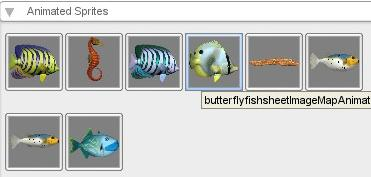 |
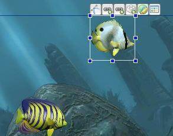 |
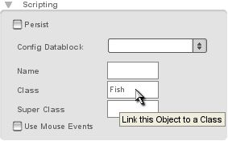
Figure 6.1.3
Now that our class is set, we need to do a couple of more things. We need to set up the world limit for this fish so that they fit just outside of the level (as shown in Figure 6.1.4). Make sure that the world limit gives the fish enough space to move completely off screen on the left and right side.
We need to set the properties for the world limit. In the right panel expand the World Limits label and change the world Limit Mode from "OFF" to "NULL" mode. Also be sure to check the Callback check box to make sure we get that script callback (as shown in Figure 6.1.5).
|
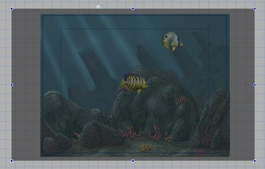 |
|
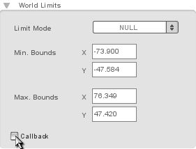 |
Figure 6.1.6
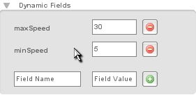
Figure 6.1.7
Now we can save our level and press the Play Level button to test it! You should see your newly added fish swim back and forth, it also should gather up the food. If you are not getting the proper results be sure you have saved your script file changes to each file.
Well, the one fish swimming around
eating up your food adds a bit more of a game play element, but more fish would
make it even more interesting. Fortunately this is very easy. Select your newly
added fish, then go to the Edit menu in the top toolbar. Choose Copy
from the menu (as shown in Figure 6.2.1). Now go back to the Edit
menu and choose paste (as shown in Figure 6.2.2). Now click and drag
your selected fish, we now have two fish (as shown in Figure 6.2.3)! Go
to your Edit tab, and at the top you should see an Animation option
with a dropdown to the right of it. Click the dropdown and change the animation
(as shown in Figure 6.2.4). You should see the fish change to a
different animated sprite. Now we have two fish. Repeat this process two more
times, and choose a different fish animation frame each time (as shown in
Figure 6.2.5). Keep in mind you may have to resize the object
after you change the animation to fit appropriately for the new animation.
|
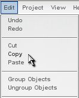 |
|||||||
|
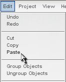 |
|||||||
|
|
|||||||
|
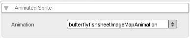 |
|||||||
|
|
|||||||
With multiple fish swimming back and forth, fish that also have different images and are going at random speeds each pass, our game is starting to be interesting and fun. Now that we have a goal and some obstacles, we need to provide a motivation for reaching that goal. Why does it need to eat the food? Also why does it need to eat food before the enemies do? We will give the fish a life (total). Its life will slowly decrease and when it eats food it will increase its life a certain amount. That way, when the fish doesn't eat food quickly enough it will die. This means two things, we need to visually represent the fish's life somehow, and we need to give it a death event. One of the easiest visual ways to notify the player that the fish is dying is it's size. We can have it resize itself in relation to its life. That way if you don't get food you shrink and die, and if you get food you grow larger. We can make its starting size at about 80% of its life. That way another 20% and it will be fully grown; but if it gets to less than 30% of its size then it will die.
We will need to add an update function to our FishPlayer class that will gauge its life and size the fish accordingly. First, we must determine what its full size will be. My fish currently is about 15 width and 15 height. So if we size it up about 20% more it will be about 18 and 18. We also need to store the fish's life. We will store it as a percent, so it will be a value between 0 and 100. The easiest way to store this is in the Level Builder , by selecting our player fish and adding two dynamic fields. Add "maxWidth" at "18" and "maxHeight" at "18". Also add another field called "life" and set it to "100" (as shown in Figure 6.3.1). Now that we have these values attached to our fish player, we can reference them in script. Doing things this way allows us to easily test different values by simply changing fields in the Level Builder and then playing the level to see the results.
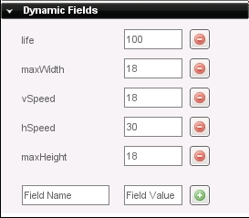
Figure 6.3.1
Be sure to save the level, and now we are finished with the Level Builder and can dig into the player.cs script file(under your MyFishGame/gameScripts folder). We are going to need to add a couple more functions to our PlayerFish class. First we will add a modifyLife() function that we can pass a positive or negative number which will adjust our total life value. Inside this function we will also need to make sure our life stays above 0 and below 100. Add this function after your PlayerFish::updateMovement(%this) function (after its ending curly brace }).
function PlayerFish::modifyLife(%this, %dmg)
{
%this.life += %dmg;
if(%this.life > 100)
{
%this.life = 100;
} else if (%this.life < 0)
{
%this.life = 0;
}
if(%this.life <= 30)
{
%this.dead();
} else
{
%this.updateLifeSize();
}
}
Code Sample 6.3.1
Here we added a new function to the PlayerFish class called "modifyLife()." We pass this function only one value (the %this value is automatically inserted). The %dmg value will represent either damage or life gained. If we want to add life we pass a positive value, and if we want to subtract life we pass a negative value. First we check to see if this new life value is greater than 100, if so, we set it to 100 since our fish can't have more than 100% life. We then check if the fish's life is less than 0, if so we set it to 0 since we don't want to have negative life. We then do one final check after comparing the life to zero. If our fish has 30% life or less, then it is dead and we call the dead() function (this is a function we need to add). If the fish's life isn't zero, then it is still alive and we need to update it's size, so we call updateLifeSize() (this is also a function we need to create). Now, lets create our updateLifeSize() function. So add this after our modifyLife() function.
function PlayerFish::updateLifeSize(%this)
{
%lifeMultiplier = %this.life / 100;
%newWidth = %this.maxWidth * %lifeMultiplier;
%newHeight = %this.maxHeight * %lifeMultiplier;
%this.setSize(%newWidth, %newHeight);
}
Code Sample 6.3.2
First we create a local variable called %lifeMultiplier. Since our life is a percentage we will want to multiply it against our maxWidth and maxHeight, so we can get the width and height in relation to what our percent life is. To do this we need to divide our current life by 100, to get a number between 0.00 and 1.00. This will allow us to directly multiply our multiplier against our max values, (which is what we do in the next two lines), and store those values in %newWidth and %newHeight. Our last line of this function we set the new size, which should be linked to how much life we have. Add this next function after our previous function.
function PlayerFish::dead(%this)
{
%this.setFlipY(true);
%this.setLinearVelocityY(-10);
%this.dead = true;
}
Code Sample 6.3.3
When we call this function and we want our fish to die, we will flip its Y direction so it is upside-down. We then set it to a negative velocity in the Y direction, so it will float up. Our final line sets the dead value on the fish object to true. We can use this value to stop key movement when we're dead. Our final function will be one that we can call to constantly lower our fish player's life. You can add this function after our previous function.
function PlayerFish::lowerLife(%this)
{
%this.modifyLife(%this.lifeDrain);
if(!%this.dead)
{
%this.schedule(500, "lowerLife");
}
}
Code Sample 6.3.4
This function first calls our modifyLlife() function, passing it the "lifeDrain" field on our fish object. This will effectively decrease our fish's life by however much we want to specify in the Level Builder. We then check to make sure that our fish isn't dead. If it is still alive, we call a function called "schedule" on our fish. This function is very useful, this will tell T2D to call whichever method of the object we're on, in a specified time. So we set 500 as the time (500 milliseconds, which is about half a second) and we pass "lowerLife" as the function name. This means that every half second it will call itself, which will lower our fish's life, and then schedule itself to be called again, effectively creating a "loop" functionality of sorts. One of our last changes to our player.cs is to simply call this lowerLife funciton when our fish is loaded. So make your onLevelLoaded function look like this.
function PlayerFish::onLevelLoaded(%this, %scenegraph)
{
$FishPlayer = %this;
moveMap.bindCmd(keyboard, "w", "fishPlayerUp();", "fishPlayerUpStop();");
moveMap.bindCmd(keyboard, "s", "fishPlayerDown();", "fishPlayerDownStop();");
moveMap.bindCmd(keyboard, "a", "fishPlayerLeft();", "fishPlayerLeftStop();");
moveMap.bindCmd(keyboard, "d", "fishPlayerRight();", "fishPlayerRightStop();");
moveMap.bindCmd(keyboard, "space", "fishPlayerBoost();", "fishPlayerBoostStop();");
%this.lowerLife();
}
Code Sample 6.3.5
We also need to prevent the user from moving the fish if it's already dead. To do this, go to your updateMovement function. We are going to add two lines to the beginning of this function, so make the beginning of your updateMovement function look like this.
function PlayerFish::updateMovement(%this)
{
if(%this.dead)
return;
Code Sample 6.3.6
This checks if our fish is dead. If it is dead, then it returns (which means it will exit out of the function), since we don't want our dead fish moving. This will now prevent our user from moving using the a, s, w, and d keys, though our boost function uses a different method. Add the same two lines to the beginning of your fishPlayerBoost() function to make the beginning look like this.
function fishPlayerBoost()
{
if($FishPlayer.dead)
return;
Code Sample 6.3.7
Now we are done with our PlayerFish class and our player.cs file. The last modification needs to be made to our fishfood.cs, to allow it to give our fish life when gathered. So open up your fishfood.cs in the same folder. Find your onCollision function, it should look like this.
function FishFood::onCollision(%srcObj, %dstObj, %srcRef, %dstRef, %time, %normal,
%contactCount, %contacts)
{
if(%dstObj.class $= "PlayerFish" || %dstObj.class $= "Fish")
{
%srcObj.spawn();
}
}
Code Sample 6.3.8
As you can see, right now we do the same response for both PlayerFish and Fish classes. We need to change this so we can add life to our PlayerFish and not do so for other Fish. Switch that onCollision() function out with this one.
function FishFood::onCollision(%srcObj, %dstObj, %srcRef, %dstRef, %time, %normal,
%contactCount, %contacts)
{
if(%dstObj.class $= "PlayerFish")
{
%srcObj.spawn();
%dstObj.modifyLife(%srcObj.lifeValue);
} else if (%dstObj.class $= "Fish")
{
%srcObj.spawn();
}
}
Code Sample 6.3.9
Instead of checking if it's either PlayerFish or Fish, we first check if it's of the PlayerFish class. We then do an else if check if its of the Fish class. This way we can do different responses. As you can see both responses still call spawn() but the PlayerFish response also calls modifyLife passing it a value stored in the field "lifeValue" on our bubble. We will need to add that dynamic field. This way we can make our bubbles different values for giving life.
We are now done with the scripts. Be sure to save them. The first thing we need to do before we play our level, is to select our bubble object, click the Edit tab, and expand the Dynamic Fields label. Then add the field of "lifeValue" and set it to "5", so our fish player will gain life when it gathers the bubbles (as shown in Figure 6.3.2).
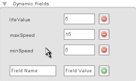
Figure 6.3.2
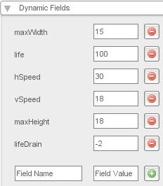
Figure 6.3.3
As time goes on you'll notice your fish shrinking, but if you get a food bubble it will then grow a bit. If you don't get food for a certain amount of time you die. If you find that this is too easy, you can go back and change the lifeDrain value to -3 or -4 to increase the difficulty. You can also increase or decrease the value of the gain from the bubble.